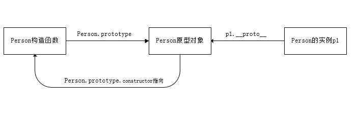
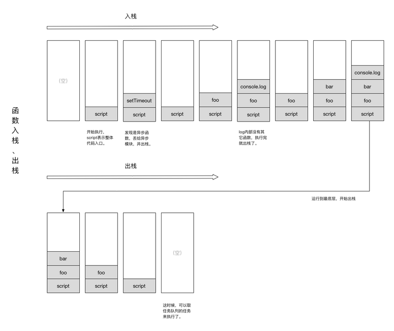
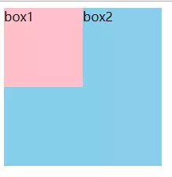
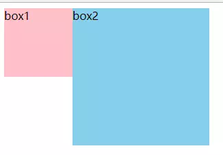
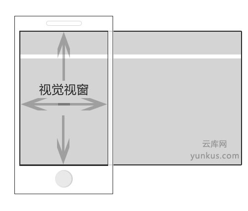
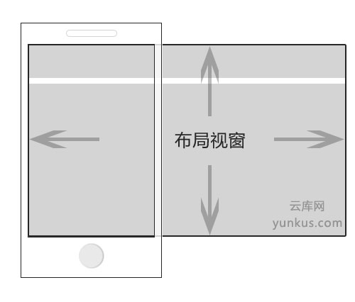

javascript篇
prototype和__proto__的关系是什么
先看一段代码
1 | function Person( name, age ) { |
__proto__是每个对象都有的一个属性，而prototype是函数才会有的属性，查找资料后是这么描述__proto__的：
对象具有属性
__proto__，可称为隐式原型，一个对象的隐式原型指向构造该对象的构造函数的原型，这也保证了实例能够访问在构造函数原型中定义的属性和方法。
而prototype是这么描述的
方法(Function)这个特殊的对象，除了和其他对象一样有上述__proto__属性之外，还有自己特有的属性——原型属性（prototype），这个属性是一个指针，指向一个对象，这个对象的用途就是包含所有实例共享的属性和方法（我们把这个对象叫做原型对象）。原型对象也有一个属性，叫做constructor，这个属性包含了一个指针，指回原构造函数。
用一张简单的图就能概括二者关系

JavaScript 异步、栈、事件循环、任务队列
嗯，还是开局一张图

有这么一段代码
1 | function bar() { |
它在栈中的入栈、出栈过程，如下图：

看到这里，我就联想到了平时使用浏览器的debug功能的时候，在断点处停住时能看到的call stack。
这里我们有个概念叫任务队列，js中，有两类任务队列：宏任务队列（macro tasks）和微任务队列（micro tasks）。宏任务队列可以有多个，微任务队列只有一个。下面是常见的一些任务的任务队列：
- 宏任务：script（全局任务）, setTimeout, setInterval, setImmediate, I/O, UI rendering.
- 微任务：process.nextTick, Promise, Object.observer, MutationObserver.
比如有这样的代码
1 | setTimeout(function() { |
比如上面这样的一段代码，setTimeout是一个宏任务源，所以里面的回调函数console.log('timeout1')会被加到宏任务队列中。到了Promise，输出promise1以及promise2，for循环内执行resolve时，由于Promise是一个微任务源，所以console.log('then1')回调会被加到微任务队列中。继续执行代码，输出grobal1。这个时候，执行栈上的代码已经执行完毕，所以此时我们执行微任务队列，此时的微任务队列上有console.log('then1')，所以浏览器输出then1。至此，一轮的事件循环已经执行完毕，开启新的一轮事件循环。也是从宏任务->执行栈->微任务。由于此时宏任务上有事件console.log('timeout1')，所以输出timeout1。这就是整段代码执行情况的理解。依次输出如下：
1 | promise1 |
nodejs中的process.nextTick和setImmediate
1 | process.nextTick(function A() { |
上面代码中，由于process.nextTick方法指定的回调函数，总是在当前"执行栈"的尾部触发，所以不仅函数A比setTimeout指定的回调函数timeout先执行，而且函数B也比timeout先执行。这说明，如果有多个process.nextTick语句（不管它们是否嵌套），将全部在当前"执行栈"执行。
1 | setImmediate(function (){ |
上面代码中，setImmediate和setTimeout被封装在一个setImmediate里面，它的运行结果总是1–TIMEOUT FIRED–2，这时函数A一定在timeout前面触发。至于2排在TIMEOUT FIRED的后面（即函数B在timeout后面触发），是因为setImmediate总是将事件注册到下一轮Event Loop，所以函数A和timeout是在同一轮Loop执行，而函数B在下一轮Loop执行
我们由此得到了process.nextTick和setImmediate的一个重要区别：多个process.nextTick语句总是在当前"执行栈"一次执行完，多个setImmediate可能则需要多次loop才能执行完。
事件模型
DOM0级模型
又称为原始事件模型，在该模型中，事件不会传播，即没有事件流的概念。事件绑定监听函数比较简单, 有两种方式:
- HTML代码中直接绑定:
1 | <input type="button" onclick="fun()"> |
- 通过JS代码指定属性值:
1 | var btn = document.getElementById('.btn'); |
DOM2级模型
属于W3C标准模型，现代浏览器(除IE6-8之外的浏览器)都支持该模型。在该事件模型中，一次事件共有三个过程:
- 事件捕获阶段(capturing phase)。事件从document一直向下传播到目标元素, 依次检查经过的节点是否绑定了事件监听函数，如果有则执行。
- 事件处理阶段(target phase)。事件到达目标元素, 触发目标元素的监听函数。
- 事件冒泡阶段(bubbling phase)。事件从目标元素冒泡到document, 依次检查经过的节点是否绑定了事件监听函数，如果有则执行。
事件绑定监听函数的方式如下:
1 | addEventListener(eventType, handler, useCapture) |
事件移除监听函数的方式如下:
1 | removeEventListener(eventType, handler, useCapture) |
参数说明:
- eventType指定事件类型(不要加on)
- handler是事件处理函数
- useCapture是一个boolean用于指定是否在捕获阶段进行处理，一般设置为false与IE浏览器保持一致。
css篇
overflow: hidden 清除浮动原理
- BFC （Block Formatting Context）全称是块级格式化上下文，用于对块级元素排版，默认情况下只有根元素（body)一个块级上下文，但是如果一个块级元素 设置了float:left，overflow:hidden或position:absolute样式，就会为这个块级元素生成一个独立的块圾上下文，就像在window全局作用域内，声明了一个function就会生成 一个独立的作用域一样，新开僻的BFC像是开僻了一个新的小宇宙，使这个块圾元素内部的排版完全独立隔绝。
- 独立的块级上下文可以包裹浮动流，全部浮动子元素也不会引起容器高度塌陷，也就是说包含块会把浮动元素的高度也计算在内，所以不用清除浮动来撑起高度。
如何触发BFC
- 根元素
- float的值不为none
- overflow的值不为visible
- display的值为inline-block、table-cell、table-caption
- position的值为absolute或fixed
- display：table也认为可以生成BFC，其实这里的主要原因在于Table会默认生成一个匿名的table-cell，正是这个匿名的table-cell生成了BFC
BFC的应用
- 解决margin重叠问题
相邻的垂直元素同时设置了margin后，实际margin值会塌陷到其中较大的那个值。其根本原理就是它们处于同一个BFC，符合“属于同一个BFC的两个相邻元素的margin会发生重叠”的规则。
2. 解决浮动问题
当在父元素中设置overflow:hidden时就会触发BFC，所以他内部的元素就不会影响外面的布局，BFC就把浮动的子元素高度当做了自己内部的高度去处理溢出，所以外面看起来是清除了浮动
- 解决侵占浮动元素的问题
当一个元素浮动，另一个元素不浮动时，浮动元素因为脱离文档流就会盖在不浮动的元素上。
1 | .box1 { |

我们做如下修改：
1 | .box2 { |

我们为非浮动元素建立BFC环境，根据BFC的不与float box重叠的规则，解决了侵占元素问题。
这一特性，我认为还是很有用的，特别是应用在两栏布局上，对比我们常规为非浮动元素或非定位元素设置margin来挤开的方法，其优点在于不需要去知道浮动或定位元素的宽度。
inline-block和float的共性和区别
共性：
- inline-block: 是把一个元素的display设置为块状内联元素，意思就是说，让一个元素的容器inline展示，并且里面的内容block展示；inline属性使元素内联展示，内联元素设置宽度无效，相邻的inline元素会在一行显示不换行，直到本行排满为止。block的元素始终会独占一行，呈块状显示，可设置宽高。所以inline-block的元素就是宽高可设置，相邻的元素会在一行显示，直到本行排满，也就是让元素的容器属性为block，内容为inline。
- float： 设置元素的浮动为左或者右浮动，当设置元素浮动时，相邻元素会根据自身大小，排满一行，如果父容器宽度不够则会换行。当我们设置了元素的浮动时，这个元素就脱离了文档流，相邻元素会呈环绕装排列。
两者共同点是都可以实现元素在一行显示，并且可以自由设置元素大小。
区别：
- inline-block: 水平排列一行，即使元素高度不一，也会以高度最大的元素高度为行高，即使高度小的元素周围留空，也不回有第二行元素上浮补位。可以设置默认的垂直对齐基线。
- float: 让元素脱离当前文档流，呈环绕装排列，如遇上行有空白，而当前元素大小可以挤进去，这个元素会在上行补位排列。默认是顶部对齐。
html篇
meta标签中的Viewport
Viewport 有几个属性
- width：控制 viewport 的大小，你可以给它指定一个值，如：600，或者甚至还可以给它一个特殊的值，如：device-width，device-width为设备的宽度（单位为缩放为 100% 时的 CSS 的像素）。
- height：与 width 相对应，指定viewport 高度。
- initial-scale：初始缩放比例，也即是当页面第一次 load 的时候缩放比例。
- maximum-scale：允许用户缩放到的最大比例。
- minimum-scale：允许用户缩放到的最小比例。
- user-scalable：是否允许用户手动缩放。
Viewport囊括了三个视窗
视觉视窗
就是指代整个屏幕的可视区域，当然不包括浏览器的导航位置

布局视窗
布局视窗跟视觉视窗不一样，它不是指设备屏幕区域，它是为了解决PC 端网站在移动端显示不佳的一个解决方案

理想视窗
这个理想视窗是为了布局视窗而生的，为什么这么说，因为它是基于布局视窗的。他其实就是变了尺寸的布局视窗。理想视窗就是把布局视窗调整到合适的状态，让页面有最好的表面效果，这也是它名字的由来。设置了理想视窗用户就不再需要对页面进行缩放，因为浏览器已经帮你把页面调整到最佳的显示状态了。而你要做的就是告诉浏览器，你要他这么做就OK了。就下面这一段代码就可以让浏览器乖乖地把布局视窗调整到最理想的状态
优化篇
网络加载类
域名收敛
对于PC 上的DNS 通常情况下就是几十ms. 因为PC可以存储很多的域名地址,而且TTL长着呢. 但是，对于手机端来说, 由于我们良心的3G和4G网络运营商节省开支的缘由, 一般在手机端上解析DNS 会到1s+. 所以，这样算下来， 首屏3s的最佳时间，你就已经没了1/3, 那还玩个屁. 不过，我们可以用很多预加载技术，比如localStorage,session,manifest等预先存储资源. 在PC上极度推崇domain sharding时, 在手机端上，此法不见得能行得通了.
所以, 一般来说，在手机端上的域名数不能超过5个。 基本上的分配就是
html +1
css +1
img +1
js +1
fonts +1
当然，这得看具体应用场景了.
避免页面中空的 href 和 src
当 link标签的 href 属性为空，或script、img、iframe标签的 src 属性为空时，浏览器在渲染的过程中仍会将 href 属性或 src 属性中的空内容进行加载，直到加载失败，这样就阻塞了页面中其他资源的下载进程，而且最终加载到的内容是无效的，因此要尽量避免。
1 | <!-- 不推荐 --> |
合理设置 Etag 和 Last-Modified
合理设置 Etag 和 Last-Modified 使用浏览器缓存，对于未修改的文件，静态资源服务器会向浏览器端返回 304 ，让浏览器从缓存中读取文件，减少 Web 资源下载的带宽消耗并降低服务器负载。
1 | <meta http-equiv="Last-Modified" content="Mon, 03 Oct 2017 17:45:57 GMT" /> |
减少页面重定向
页面每次重定向都会延长页面内容返回的等待延时，一次重定向大约需要 600 毫秒的时间开销，为了保证用户尽快看到页面的内容，要尽量避免页面重定向。
使用静态资源分域存放来增加下载并行数
浏览器在同一时刻向同一个域名请求文件的并行下载数是有限的，因此可以利用多个域名的主机来存放不同的静态资源，增大页面加载时资源的并行下载数，缩短页面资源加载的时间。通常根据多个域名来分别存储 JavaScript、CSS 和图片文件。
但是这个策略需要慎用，因为过多的域名会造成DNS解析开销
CDN
使用静态资源 CDN 来存储文件
如果条件允许，可以利用 CDN 网络加快同一个地理区域内重复静态资源文件的响应下载速度，缩短资源请求时间。
使用 CDN Combo 下载传输内容
CDN Combo 是在 CDN 服务器端将多个文件请求打包成一个文件的形式来返回的技术，这样可以实现 HTTP 连接传输的一次复用，减少浏览器的 HTTP 请求数，加快资源下载速度。例如同一个域名 CDN 服务器上的 a.js，b.js，c.js 就可以按如下方式在一个请求中下载。
1 | <script src="//cdn.domain.com/path/a.js,b.js,c.js"></script> |
这种方式我在微信公众号后台看到过
使用 GET 来完成 AJAX 请求
使用 XMLHttpRequest 时，浏览器中的 POST 方法发送请求首先发送文件头，然后发送 HTTP 正文数据。而使用 GET 时只发送头部，所以在拉取服务端数据时使用 GET 请求效率更高。
减少 Cookie 的大小并进行 Cookie 隔离
HTTP 请求通常默认带上浏览器端的 Cookie 一起发送给服务器，所以在非必要的情况下，要尽量减少 Cookie 来减小 HTTP 请求的大小。对于静态资源，尽量使用不同的域名来存放，因为 Cookie 默认是不能跨域的，这样就做到了不同域名下静态资源请求的 Cookie 隔离。
使用异步 JavaScript 资源
异步的 JavaScript 资源不会阻塞文档解析，所以允许在浏览器中优先渲染页面，延后加载脚本执行。例如 JavaScript 的引用可以如下设置，也可以使用模块化加载机制来实现。比如 requireJS、Seajs等
1 | //使用defer时，加载后续文档元素的过程和main.js的加载是并行的，但main.js的执行要在页面所有元素解析完成之后才开始执行 |
使用base64编码
小文件应转换成base64编码，如小图，字体文件，音频等，尽量减少http请求
1 | .class-name { |
图片/视频懒加载
为了保证页面内容的最小化，加速页面的渲染，尽可能节省移动端网络流量，页面中的图片资源推荐使用懒加载实现，在页面滚动时动态载入图片。
1 | <img data-src="https://user-gold-cdn.xitu.io/2017/12/29/160a1604f3efd980" alt="懒加载图片" > |
使用 iconfont 代替图片图标
在页面中尽可能使用 iconfont 来代替图片图标，这样做的好处有以下几个：
- 使用 iconfont 体积较小，而且是矢量图，因此缩放时不会失真；
- 可以方便地修改图片大小尺寸和呈现颜色。
页面渲染类
把 CSS 资源引用放到 HTML 文件顶部
一般推荐将所有 CSS 资源尽早指定在 HTML 文档
中，这样浏览器可以优先加载 CSS 并尽早完成页面渲染。JavaScript 资源引用放到 HTML 文件底部
JavaScript 资源放到 HTML 文档底部可以防止 JavaScript 的加载和解析执行对页面渲染造成阻塞。由于 JavaScript 资源默认是解析阻塞的，除非被标记为异步或者通过其他的异步方式加载，否则会阻塞 HTML DOM 解析和 CSS 渲染的过程。
不要在 HTML 中直接缩放图片
在 HTML 中直接缩放图片会导致页面内容的重排重绘，此时可能会使页面中的其他操作产生卡顿，因此要尽量减少在页面中直接进行图片缩放。
减少 DOM 元素数量和深度
HTML 中标签元素越多，标签的层级越深，浏览器解析 ** DOM** 并绘制到浏览器中所花的时间就越长，所以应尽可能保持 DOM 元素简洁和层级较少。
1 | <!--不推荐--> |
尽量避免使用 table、iframe等慢元素
table内容的渲染是将 table 的 DOM 渲染树全部生成完并一次性绘制到页面上的，所以在长表格渲染时很耗性能，应该尽量避免使用它，可以考虑使用列表元素 ul 代替。尽量使用异步的方式动态添加 iframe 内资源的下载进程会阻塞父页面静态资源的下载与 CSS 及 HTML DOM的解析。
避免运行耗时的 Javascript
长时间运行的 JavaScript 会阻塞浏览器构建 DOM 树、DOM 渲染树、渲染页面。所以，任何与页面初次渲染无关的逻辑功能都应该延迟加载执行，这和 JavaScript 资源的异步加载思路是一致的。
避免使用 CSS 表达式或 CSS 滤镜
CSS 表达式或 CSS 滤镜的解析渲染速度是比较慢的，在有其他解决方案的情况下应该尽量避免使用。
1 | /* 不推荐 */ |
安全
xss和csrf的原理以及怎么预防
XSS
用户浏览网页时发送错误，向服务器请求 URL，比如www.xxx.com/error.php?message=sorry,an error occurred，然后服务器根据得到的 message，不进行过滤，复制到错误页面的模板中：<p>sorry,an error occurred</p>，返回给用户。
这个漏洞有一个显著的特征，应用程序没有进行任何过滤或净化措施，就非常容易受到攻击。www.xxx.com/error.php?message=<script>alert(1)</script>，当用户打开错误页面时，就会出现<p><script>alert(1)</script></p>，弹出一个消息框。
显然，攻击人员不会很傻的仅仅 alert 一些消息，在 IE 中，如果开启跨站点脚本检测可能无法弹出消息。通常 XSS 都会伴随着会话劫持，攻击者截获通过验证的用户的会话令牌。劫持用户的会话后，攻击者就可以访问该用户授权访问的所有数据和功能。
比如攻击者构造一个这样的 URL，message 信息如下
1 | var i = new Image; |
这样被攻击者通过访问这个恶意的 URL，就会把 cookie 发送给黑客，黑客截获 cookie，就能执行用户的任意操纵。
OSRF
跨站点请求伪造才是跨站伪造的重点内容，攻击者只需要创建一个看似无害的网站，致使受害者的浏览器直接向易受攻击的服务器提交一个请求，执行恶意代码。
仍然需要考虑同源策略，以管理员创建新用户为例，
1 | POST /newUser.php HTTP/1.1 |
黑客构造的网站会提交一个 form 表单，并想办法让 form 隐藏：
1 |
|
当管理员已经登陆的情况下，访问这个恶意网站的时候，就会提交这段脚本，管理员都不知情。因为管理员已经登陆，无需考虑 Cookie 的问题，一个简单的 CSRF 如此。
应对办法
- 对一些关键字和特殊字符进行过滤或 URL、HTML 编码，"<>?“或"script，javascript”；
- Cookie 防盗，在 Cookie 中防止放入用户名和密码，对 Cookie 信息进行 MD5 等算法进行多次散列存放，必要时还要对 ip 和 cookie 进行绑定，一旦检测异常，立马让用户重新登录；
- 验证HTTP Referer
- 在请求中添加 token 并验证